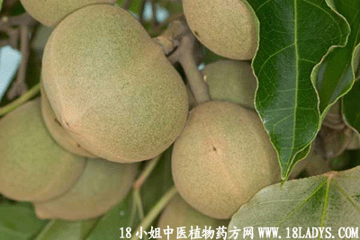

植物名：石栗
生长环境：本品为常绿大乔木，栽植于路旁园庭。
分布：原产于印尼，现广植于热带各地。
入药部分：叶、果。
采集期：全年采叶，秋季采果。
自采地点：家种。
性味：性寒、味甘淡、果有微毒。
功能：通经、利尿。
主治、用量和用法：1、白浊：用果5～10枚，打碎，陈皮少许，猪瘦肉适量，清水煎服；2、经闭：用果5～10枚，打碎，猪瘦肉或猪横俐一条，清水煎服。
（方歌）石栗甘淡性微寒，能疗白浊与闭经，少加陈皮缘理气，瘦肉同煲效果灵。
附录：（叶）治闭经、白浊：用干叶1～2两，猪瘦肉适量，清水煎服。
禁忌：孕妇忌服。
(本文解释权归中药材天地网兄弟站-中药大全-中医植物药方网所有,如需转载请注明出处)
(本文解释权归中药材天地网兄弟站-中药大全-中医植物药方网所有,如需转载请注明出处)